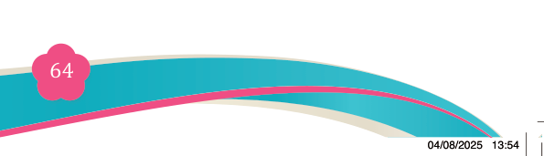
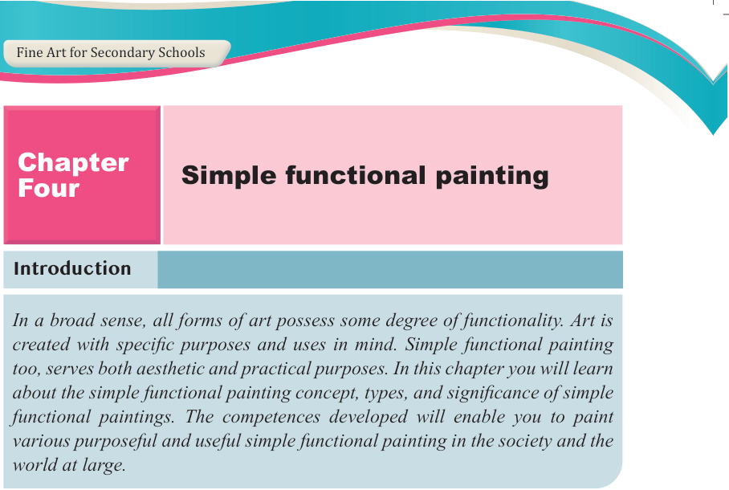

Fine Art for Secondary Schools

64

Student’s Book Form Two

Introduction
In a broad sense, all forms of art possess some degree of functionality. Art is created with specific purposes and uses in mind. Simple functional painting too, serves both aesthetic and practical purposes. In this chapter you will learn about the simple functional painting concept, types, and significance of simple functional paintings. The competences developed will enable you to paint various purposeful and useful simple functional painting in the society and the world at large.
Think
The influence of functional painting images.
Concept of simple functional painting
Simple functional painting refers to the creation of artworks that depict objects designed for specific purposes or uses. What makes it to be functional is that it is created not only for decoration but also for serving a particular function in daily life. In the context of art, painting is a visual medium characterized by the
application of pigments, colours, or other materials to a surface. Throughout
history, painting in both Eastern and Western cultures has often been dominated by
religious themes and traditional objects. In contrast, African painting has primarily
been represented through cave paintings, such as those found in Kondoa Irangi,
as well as through objects like the Nyamwezi wooden chairs in Tanzania, to name
a few. See figure 4.1 and 4.2 (a & b)
From this fine art perspective, the creation of functional painted objects has
contributed to the innovation of various purposeful and useful items in the world.
Chapter
Four
Simple functional painting
04/08/2025 13:54